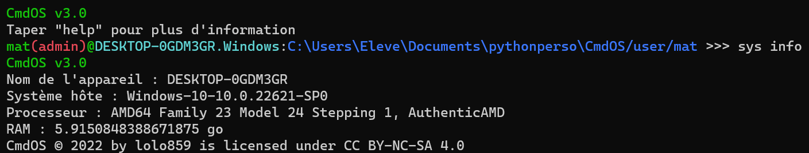

La commannde "sys" permet de modifier certains paramètres.
La sous-commande "account" vous permet de modifier votre compte simplement.
sys account user : modifier votre nom d'utilisateur
sys account password : modifier votre mot de passe
sys account disconnect : déconnecte votre compte (non disponible pour les comptes locaux)
sys account delete : supprime votre compte
sys account reset : réinitialise votre clé de chiffrement (non disponible pour les comptes locaux)
La sous-commande "update" vous permet de mettre à jour le système.
sys update check : vérifie la version du système
sys update upgrade : télécharge get-cmdos pour effectuer la mise à jour
En tapant "sys purge", vous pouvez supprimer tous les fichiers de logs de CmdOS.
En tapant "sys scan", vous pouvez rechercher d'autres instances de CmdOS sur votre appareil.
Attention : cela peut prendre du temps
En tapant "sys info", vous obtiendrez des informations sur votre système et votre machine :
